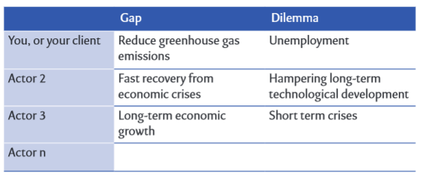
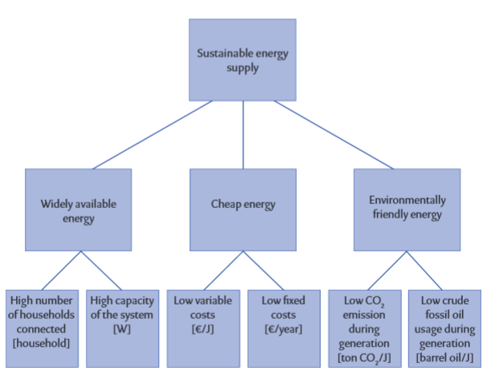
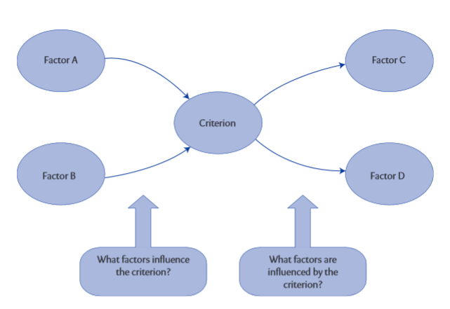
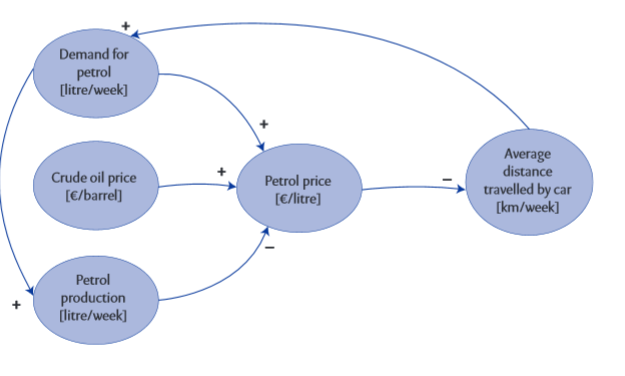
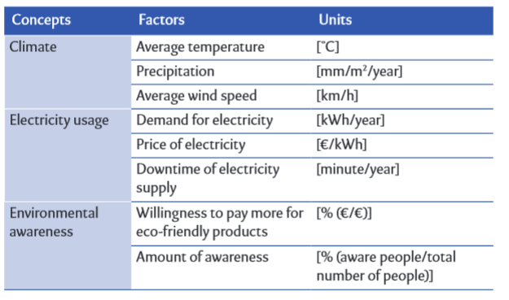
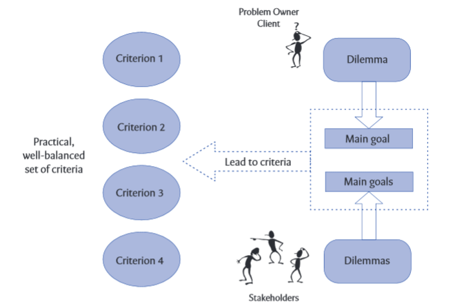
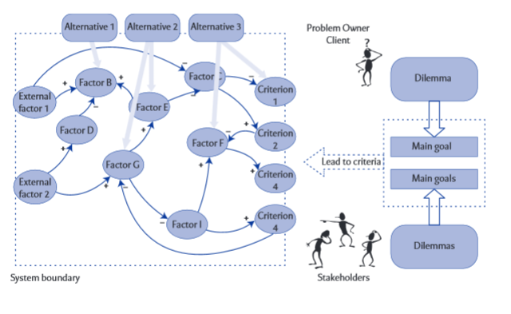
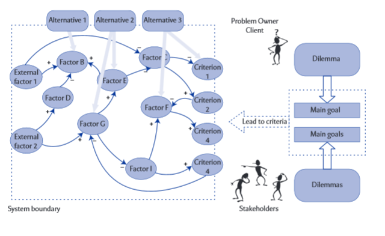

Conceptualizing the problem
In order to solve it analytically, ideally, it first has to become clear exactly what the problem is. When that has been clarified, one can identify:
-
Who is involved in this problem (actors)
-
What all these different actors want (their objectives).
You can make a model (a simplified representation of reality) that describes the problem area in a simple but practical and useful way. Finally, you can show which measures (alternatives) the different actors can take.
Conceptualizing is iterative in nature. Initially, this analytical process appears to be sequential. First, identify precisely what the problem is, and only then take the next step of identifying the actors involved. Although you might follow the steps successively, every step forward will lead to a revision of one or more of the previous steps. When you map out what all the actors want, you will often discover that you have not defined the problem properly. When you gather alternatives, you may notice that your model of the problem area isn't complete yet. The process of conceptualizing the problem is iterative in nature.
Steps to conceptualize the problem:
Problem statement
The proper definition of the problem before one starts working on a project can prevent a lot of disappointment at the end. That is why you should try to spend a realistic amount of time on the formulation of the problem! 30% (or even more) of the total project time can easily be devoted to precise definition of the problem, especially with complex problems involving new technologies and/or many different actors with conflicting interests.
At the basis of a problem, there are two situations: the current, or future, undesired situation, and the desired situation that a particular actor wishes to be in. The difference between the undesired and the desired situations is called 'the gap' that should be bridged by the actor. However, when trying to get from the undesired situation to the desired one, there will always be a downside to the desired situation, an effect that the actor does not like, even if his wish for the desired situation has come about. This 'unwanted downside' to the desired situation we call 'the dilemma'. The dilemma is the reason why that desired condition of the system (no noise nuisance) isn't easily accomplished.
The dissatisfaction of our actor about the undesired situation is due to a certain condition of a system in which the problem occurs. Perhaps this dissatisfaction is about possible alternatives too, but they are not expressed in the problem statement. After all, in an analysis we want to keep our options open, and weigh up different alternatives. Focusing on certain alternatives already in the problem statement refrains us from doing so, so avoiding alternatives in the problem statement is essential to a thorough analysis.
In looking for the dilemma in your problem, it helps when you focus on the wish of an actor (getting anywhere in the world cheaply and quickly) and how that wish is classically fulfilled (by flying, resulting in noise nuisance). Focus on what is problematic when fulfilling the actor's wish.
Remember that a problem statement is always made from the perspective of a certain actor. For every actor you can design a unique problem statement, because every actor has different interests and thus will have different wishes. Nevertheless, the main elements that form the dilemma (and thus the problem) might naturally return several times in those problem statements.
The art is to choose an alternative (a solution) that everybody supports with the help of an analysis that was made with all parties involved. At first it may sound strange, but you do not have to agree on what you want to accomplish (the goal) as long as you can agree on what you are going to do (the means). An increase of road taxes (alternative) on old cars can be supported by an actor because that tax increase reduces the environmental damage, as fewer old cars will be driving around. Another actor, who possibly is not interested in the environment, can support this alternative because people are then sooner inclined to discard their old car and buy a new one, eventually leading to a rise in car sales.
Initial problem statements are good starting points for a discussion with your client or one of the other actors in the problem field. If you have formulated an initial theoretically correct problem statement, it is easier for them to give a short reaction, rather than an elaborate story about what they think is the problem.
A useful way of presenting problem statements is to list the tensions and dilemmas different actors face. Many actors will then realize they feel the same dilemma, but only the other way around. Someone wants to reduce Co2 emissions, but fears for the country's electricity production. Someone else wants to keep the electricity production up to keep up with expected required future capacity, but fears it might come at the cost of emitting more Co2

Common mistakes when formulating problem statements:
- No dilemma -- every problem statement should contain both a gap (a difference between a desired condition of a system and a deferred current, or possible expected future, condition of a system) and a dilemma (a reason why that desired condition of the system isn't easily accomplished). Formulations without dilemma do not describe a problem. In other words, you know what someone wants but not why he cannot accomplish it. Because you do not know where the problem lies, you don't know what to focus on. As an analyst you will not show that you have sufficient knowledge of the system that you are analyzing, so your credibility eventually decreases. You will get less information, less co-operation, and, in the end, your analysis will fail.
Problem statements without dilemmas are for example: 'We want to reduce the emission of harmful substances', 'How can we reduce the traffic jams?' or 'How can we increase our profit?'
A characteristic of such formulations, without dilemmas, is that they can be solved with simple and 'strange' alternatives. In the examples named above, for example, close off the chimney, prohibit driving or rob a bank.
- No wish or 'gap' -- At first it is hard to see what a problem statement is without a wish. Nevertheless these statements occur frequently. They usually involve people that put the blame for a lot of things on other parties, other people, and other actors. They only mention reasons why something can't be accomplished. You could call these people 'complainers'.
Because you do not know what to accomplish with such a problem statement, it is impossible to know what system to focus on, or how you can measure whether a system's condition is improving, and you do not know what kind of alternatives are actually possible.
Problem statements without a wish or a 'gap' are, for example: ' i t is clear that we need a highway here, but they don't want to cooperate', 'We cannot reduce residential waste without the commitment of the citizens' or 'We would like to give the harbor a 'facelift', but the municipality won't make a budget available for us.
- An apparent dilemma -- 'We want to generate environmental friendly electricity without increasing C o 2 emissions', 'How can we produce more efficiently without increasing the production costs?' or 'What can we do about the traffic jams without everything getting jammed?' All these problem statements seem to have both a wish and a dilemma, but when you look closer you will actually find that there isn't a real dilemma present.
Fulfilling the wish is, in these examples, the same as solving the dilemma or the other way around: if you take care of the dilemma there is no wish anymore. Both wish and dilemma focus on the same thing. In fact there is no tension at all between the wish that a client has and the reason why that wish cannot simply be fulfilled. In his urgency to make clear what the problem is, the client or the analyst has made a mistake and has introduced the same thing twice. The same difficulties arise as in the situation of a problem statement without a dilemma: you have no idea what to focus on (and when you continue your analysis, your credibility will be questioned too).
- Double wishes and/or dilemmas -- it is also possible that people write a problem statement that seems to be well written and complete. let's take the following problem statement: 'How can the municipality create more recreational facilities and better access to the neighborhood, without creating nuisance for the inhabitants through heavy traffic and an 'empty' neighborhood off-season?'
Look at it closely: what is the wish here? Actually, there are two: creating more recreational facilities (of which we can think: is there a wish behind this? perhaps attracting more tourists?) and improving accessibility (by car or public transport, for example). Having two wishes in the problem statement means that you will have great difficulty finding alternatives. What if we remove the recreational facilities from the problem statement? Now the problem statement becomes 'How can the municipality create better access to the neighborhood, without creating nuisance for the inhabitants through heavy traffic and an 'empty' neighborhood off-season?' now, suddenly, there is no dilemma anymore! Of course, that should not be the case, since the municipality does experience a problem. I you encounter this type of problem statement, ask your client if there is a wish behind the description he gave. 'Better access to the neighborhood' can also relate to the wish of attracting more tourists (who are stuck in traffic right now, and choose other destinations because of this), so the problem statement might become: 'How can the municipality attract more tourists to the neighborhood, without creating traffic nuisance for the inhabitants?' This way, you have a clear view of the wish the municipality has, and the 'solution space' is wide open: a large number of different alternatives can be considered.
- Mentioning a specific alternative -- The most common mistake is not so much the problem mentioned, but the alternative that someone has thought of to solve that problem. If the problem is about capacity for electricity generation, someone will talk about the 'problem' of building power plants. If the problem is about transport capacity, people will talk about getting as many trains as possible leaving the station per hour. People find it easier to come up with an alternative, with advice, or with an idea, than to actually name the problem behind it all. A problem statement with an alternative in it causes you to think more narrowly and less creatively about possibilities to solve the problem. People will stay focused on that one alternative everyone has been talking about since the beginning of the analysis. Perhaps that alternative will eventually be implemented, but the question remains whether the right problem was solved.
Examples of problem statements with alternatives named in them are; 'How can we build that nuclear plant without exceeding the budget?', 'We have to get the trucks off the motorway but we also have to maintain the flexibility of the transport system' or 'That tunnel has to be built there without damaging nature too much.' in these problem statements, one will probably not think of different alternatives than different types of power plants, reducing road freight or different forms of tunnels. This is a shame because alternatives like solar energy, reducing energy usage, other logistics, rewarding chauffeurs for desirable behaviour on the road, or reducing sound nuisance by placing sound walls could possibly be good alternatives too, depending on the real gap and dilemma of this actor
- Using words like 'optimal', 'minimal', best, etc. -- People generally tend to look for the solution to the problem. If they think a little longer, they might want to find the best solution. However, the problems we face are so complex, and no one can predict what the future will bring; no one can possibly predict the best alternative. Most likely, different actors will prefer different alternatives. In the end our facilitation of the decision- making process should help people to concur on a particular alternative to implement. Not necessarily for the same reason, but as long as people can agree on the alternative. Is this the best solution? Probably not, and, in addition, no one can know. Tomorrow, or in a year, the group of actors might agree on another alternative to implement. Or even today, if the group of actors are different, but the situation they face is the same, they might end up with a different alternative.
Using words like 'minimal', 'best' and 'optimal' focuses on one particular alternative, the one that scores minimally on a certain criterion, or best, or optimally. Even if it were possible to agree with the group on how to translate the value of one criterion against another (so optimization would, at least mathematically, be possible), problem statements would still focus on finding one alternative. The idea is that a rational comparison of many alternatives on a set of well-balanced criteria facilitates decision-making in such a way that the actors involved can have a clear view of different alternatives and their effects, without looking for the optimal one.
Actor objectives analysis, Criteria for decision making (goal tree)
Actors tend to promote 'their' alternative for 'the' problem. 'Wind mills are the only serious option to tackle our energy problem, as they are really sustainable.' Usually, another actor also starts promoting his alternative, leading to lots of discussion and not bringing a shared decision for one alternative any closer. The previous Section introduced the problem statement to redirect the discussion from alternatives to the problem, mainly to keep the solution space large enough and to generate and compare several alternatives. When a list of alternatives becomes available, we would like to know to what extent they solve the problem and fit the preferences of the actors. Also, if we want to compare alternatives, we need a set of criteria with which to compare them.
What is needed is a well-balanced set of criteria, representing all aspects (including the implicit ones) of our problem owner and other actors involved in the problem field. Although it will be clear from the beginning that it is difficult to take all criteria into account, it would be impossible for our client to make a well grounded and carefully considered decision if he is not aware of important criteria for all the actors involved.
Remember the discussion with our problem owner about the problem statement. Especially remember the implicit dilemma he had in mind when you came up with a 'strange' solution to his problem. 'But that is not what i mean!' A clear wish and dilemma can never be represented by a single criterion. Gut, as we can guess, many more issues will be implicit in the heads of our clients. We can expect that various criteria are needed to represent all this. A structured approach to reaching these criteria is to ask 'why do you want this?' Go back to our client, our entrepreneur, who answered 'more turnover' when we asked what he wanted. We can discern several implicit thoughts behind this answer, by asking him the simple 'why?' question, over and over.
'Why do you want more turnover?' To create more profit? And why more profit? To be able to continue the business? And why continue? Your client is an entrepreneur. To ask him why he wants to continue his business (apart from being a somewhat strange question) is to discuss the 'being' of an entrepreneur: continuing the business. Hopefully there is another, more abstract goal for our client when it comes to his life: we have reached his interest, which is always there, independent of any problem, even without the problem being perceived

In other words, goal trees are actor-specific. Only when all actors are involved in criteria creation (i.e., all actors have their own goal tree) can the analyst create a well-balanced set of criteria for further analysis, and which can eventually be used in the decision-making process.
In practice, it is useful to start by making a goal tree with, and for, your client. Once this has been done, and your client agrees with the result, you can discuss whether it is necessary and possible to create goal trees for other actors as well. When you have a set of goal trees, you can decide on which criteria to include in your analyses. Do not be too picky about selecting criteria, since having too few criteria may lead to alternatives being selected which do not live up to the goals of the actors.
What are commonly made mistakes and their effects in designing goal trees?
- Causal relations and/or verbs in the goal tree -- The most common error that people make in constructing goal trees is that they consider lower goals to be a means to reach higher goals. This comes close to our human habit of thinking in solutions rather than in problems, as we discussed earlier in this book. These people don't answer the question 'what is cheap energy?' They identify ways to reach cheap energy, like 'decrease production costs' or 'reduce transport costs'. These are means to reach the goal of cheap energy, not criteria to find out whether a certain alternative A results in cheaper energy than another alternative
As soon as you see verbs in a goal tree, be alert. Verbs represent actions and, thus, cannot define goals. 'Increasing the number of thermal power plants' is an action, something that is done. It is done to reach a goal, like more environmentally friendly energy. It is, however, not defining what environmentally friendly energy is: it is a way to get it! In essence, all actions like these are alternatives that might (partly) solve the problem. Of course, we have to find out whether they really have potential but, in principle, they may have. Thus, when you use verbs in a goal tree you are basically introducing alternatives and, with this, creating substantial bias in your analysis.
- Goal tree contains alternatives -- often, people 'Operationalize' objectives like 'environmentally friendly energy' in terms of 'more photovoltaic cells' and 'more wind mills'. However, these are two alternatives that in this problem some of the actors will consider as being 'the' solution. It is alternatives like these that we want to compare, or rationalize, on a well-balanced set of criteria as input for the decision- making process. We find criteria (or better: make implicit criteria of the actors explicit) using the goal tree technique. If we introduce alternatives in the goal tree, we basically create criteria for specific alternatives. Later, in the decision-making process, these alternatives would then be compared to each other on the full set of criteria, including their 'own' criteria. As such, an alternative will always have a good score on its own criteria, while other alternatives will not, and substantial bias will have been introduced in the analysis. To put it bluntly, an alternative that involves building wind mills will never score well on 'more photovoltaic cells'.
If you do not recognize alternatives immediately, for all sub-goals ask yourself the question 'does this sub-goal lead to the higher goal, or, does it define the higher goal?' Alternatives will never have definition relations with higher goals, only causal relations. Useful goal trees only obtain definition relations and no causal relations
- Main goal too generic -- if you keep on asking the 'why do you want this?' question, you end up with the general interest of that particular actor. Car drivers want 'good mobility'. Presidents want to stay in power; entrepreneurs want 'continuity' of their business. These interests look like goals, but it is not practical to use them as the main goal in a goal tree. These interests are always there, also no problem is perceived and, thus, no alternatives to solve it are considered. The interest turns into an objective at the moment this interest is violated: then the actor perceives a problem or a challenge and wants to solve it. At that moment it becomes practical to translate the general interest into a concrete goal for that particular perceived problem.
That concrete main goal is not the same as the general interest, but represents the general interest for this particular problem. The president of an electricity producing company might consider his interest 'continuity of his company', independent of a problem. When society wants to be more environmentally friendly, and people are no longer buying his coal-generated electricity, he might translate his general interest to 'sustainable energy supply'. In his case, part of the definition of sustainable energy supply could be that there needs to be a market for
His production. Should 'continuity' be the main goal, no practical well- balanced set of criteria could be found. In this case, continuity would be measured in, for instance, [year], but other too generic main goals might lead to a lot of criteria of which the majority have nothing to do with the perceived problem. Both ways, the criteria are not supporting the decision-making process.
- Goal tree too large -- if you do not limit yourself while making the goal tree, you may end up with a goal tree that is too large to read. It will then probably contain a very generic main goal, and a number of branches that are not at all related to the problem field. Try to use 3 to 4 levels in your goal tree, and not more than 20 goals.
System description (causal diagram)
A certain action will be an interesting alternative for a specific actor if it is 'doing something that solves his problem'. Now that the problems held by different actors are represented in criteria using the goal tree technique, an alternative becomes 'doing something that influences the scores on the criteria'. Basically, anything that influences the scores on the criteria can be treated as an alternative. Needless to say not all of these alternatives are practical, not even 'good' (i.e., influencing criteria in the desired direction of change). However, how 'good' certain alternatives are is a matter of interpreting their scores on the criteria. First step is to find out what influences the scores on the criteria
Practically, let's take a criterion from our well-balanced set (derived from all the goal trees we made for the actors involved) and ask two questions: 'what factors influence this criterion?' and 'what factors are influenced by this criterion?' note that the questions we asked when constructing a goal tree were definition questions ('what does it mean?'), while these two questions are about causal relations ('what influences?').


Of course, many other criteria matter as well, that is why we made the effort to create all these goal trees for all actors involved to come to a well-balanced set of criteria. Your complete causal diagram, including all important criteria from the goal trees you designed, will be much larger.
The causal diagram is very useful in connecting the alternatives to the criteria. Its usefulness is that is shows how (i.e., through what mechanism) the alternatives eventually change the value of the criteria. It makes it possible to estimate the effects of different alternatives on the set of criteria that is used. Therefore, it makes it possible that a client, in the end, can compare the alternatives and choose one to solve the problem. In this way, the causal diagram, like all other techniques presented in this book, helps the client decide. In other words, it facilitates the decision-making process.
What can help you practically when constructing a causal diagram is to identify factors using a table with three columns: 'concepts', 'factors' and 'units'. most of the time when you start studying a system, you have some abstract ideas about things that are important. If the problem is about alternative energy sources, you quickly might think about things like 'climate', 'electricity usage', or 'environmental awareness'. These factors are not yet explicit, operational factors, but mere concepts.

Problem diagram

 
